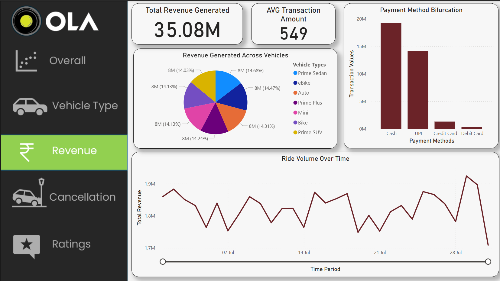

Project Details
Designed and developed an interactive Power BI dashboard to analyze 10,000+ ride records, focusing on revenue, ride trends, and cancellations.
Key Features
- Created data visualizations including line charts, bar graphs, pie charts, and KPI cards
- Tracked revenue growth, cancellations, and ride performance
- Implemented Top 5 Customer Cancellations Table using DAX functions
- Enhanced cancellation pattern detection by 30%
- Built cancellation trends line graph comparing rider vs. customer cancellations
Technologies Used
PowerBI, DAX, SQL, Data Visualization
View on GitHub
Back to Portfolio